ВАЖНО
ОПИСАНИЕ СИМВОЛОВ
| 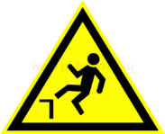 | Опасность падения |
| Важные предупреждающие сообщения, способствующие предотвращению травм и значительного ущерба | |
| 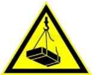 | Предостережение о наличии подвешенного груза |

|
Предостережение об опасности возникновения взрыва |

|
Предостережение о наличии электрического напряжения |
Указания по технике безопасности в работе
- Перед установкой, эксплуатацией, работами по техническому обслуживанию или ремонту нории пользователь, работающий с устройством, должен прочитать и усвоить содержание руководства по эксплуатации.
- Необходимо определить конкретную ответственность за монтаж, эксплуатацию, техническое обслуживание и ремонт транспортера и строго придерживаться ее.
- При транспортировке и установке необходимо соблюдать действующие на местах предписания по технике безопасности.
- ЗАПРЕЩЕНО превышать допустимую грузоподъемность транспортных средств и подъемных приспособлений.
- ЗАПРЕЩЕНО производить изменения предусмотренных вспомогательных конструкций для монтажа, а также чрезмерно перегружать их.
- Для конструкций подпорок и зданий, предоставленных лицом эксплуатирующим оборудование, для установки ему необходимо представить свидетельства об их устойчивости.
- Перед первым введением в эксплуатацию необходимо установить все защитные приспособления и проверить их работоспособность.
- Для надежности эксплуатации необходимо обеспечить проведение предписанных работ по техническому обслуживанию и техническому уходу.
- Транспортеры предназначены только для транспортировки сыпучих материалов при помощи тягового органа - цепь со скребками. Любое другое, выходящее за эти рамки использование считается не соответствующим предназначению. За возникший в результате этого ущерб несет ответственность только пользователь.
- Все работы по электротехнике разрешается проводить только квалифицированным специалистам электротехникам.
- Работы по эксплуатации, техническому обслуживанию и техническому уходу разрешается проводить только квалифицированным специалистам. Если нет такой возможности, то необходимо привлечь службу сервиса изготовителя.
- Гарантийные обязательства изготовителя определяются условиями контракта. Эти обязательства не дополняются и не сокращаются указаниями по технике безопасности.
ОПИСАНИЕ
В связи с постоянной работой по совершенствованию скребкового транспортёра, повышающей её надёжность и улучшающей условия эксплуатации, в конструкцию могут быть внесены незначительные изменения, не отражённые в настоящем издании.
Терминология:
Транспортер состоит из следующих компонентов:
- Натяжная станция транспортера;
- Приводная станция транспортера;
- Промежуточная и доборная секции;
- Цепь со скребками;
- Датчик обрыва цепи;
- Предохранитель от перегрузки (датчик подпора);
Эти компоненты вместе составляют устройство транспортера, на которое может быть установлено дополнительное оборудование.
Принцип действия
Сыпучий материал загружается в транспортер через загрузочную секцию. Цепь, циркулирующая в коробе, транспортирует сыпучий материал в направлении приводной станции. На выпуске транспортера сыпучий материал падает сквозь отверстие в днище и попадает в другую систему транспортировки.
В промежуточных коробах может быть также установлено впускное и выпускное устройство. Датчик числа оборотов в натяжной станции транспортера контролирует движение цепи. При помощи датчика подпора на станции привода предотвращается перегрузка транспортера, вызываемая затором.
ОПИСАНИЕ КОМПОНЕНТОВ
Натяжная станция транспортера
Станция натяжная горизонтальная
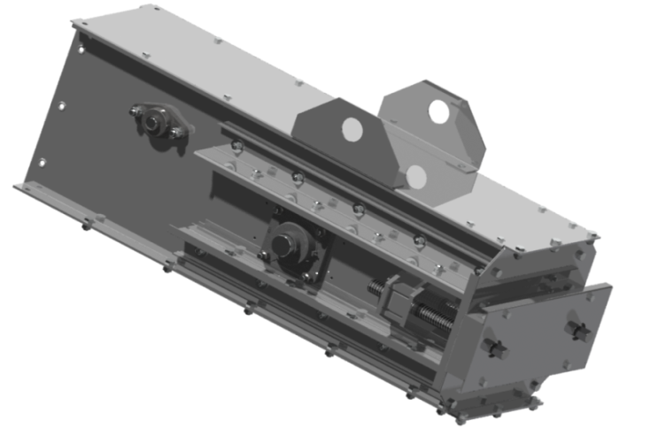
Натяжная станция транспортера состоит из следующих компонентов:
- Подшипниковые узлы;
- Вал;
- Направляющая звездочка либо ролик;
- Натяжные винты;
- Датчик числа оборотов(опционально);
- Механизм синхронизации (отсутствует на транспортерах производительностью более 350 т/ч). Вал с направляющим роликом либо звездочкой установлен с двух сторон в подшипниковых узлах, регулируемых по горизонтали. Регулировка цепи осуществляется с использованием натяжных винтов. Механизм синхронизации обеспечивает правильное положение ролика и гарантирует движение по прямой.
Натяжная станция транспортера вертикальная

Натяжная станция транспортера состоит из следующих компонентов:
- Подшипниковые узлы;
- Вал;
- Оси;
- Направляющая звездочка;
- Обводные ролики;
- Натяжные винты;
- Датчик числа оборотов(опционально);
Вал с направляющей звездочкой установлен с двух сторон в подшипниковых узлах, регулируемых по вертикали. Регулировка цепи осуществляется при помощи натяжных винтов.
Приводная станция транспортера
Станция приводная с осевым исполнением мотор-редуктора
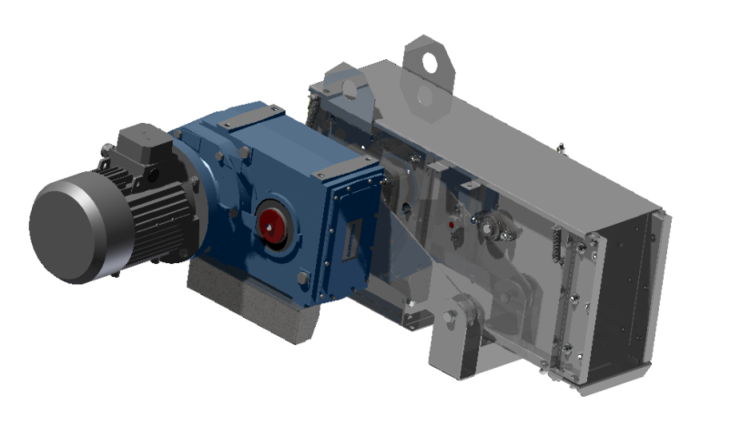
Станция приводная транспортера состоит из:
- Короб;
- Мотор-редуктор (цилиндрический);
- Подшипниковые узлы;
- Вал;
- Звездочка приводная;
- Датчик контроля обрыва цепи.
- Предохранитель от перегрузки (датчик подпора).
Станция приводная с угловым исполнением мотор-редуктора
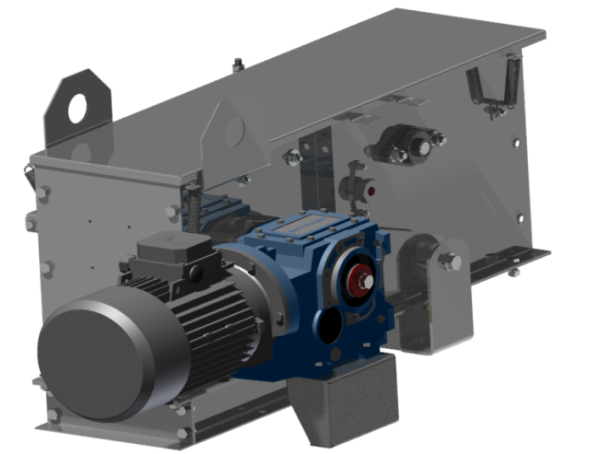
Станция приводная транспортера состоит из:
- Короб;
- Мотор-редуктор (коническо-цилиндрический);
- Подшипниковые узлы;
- Вал;
- Звездочка приводная;
- Предохранитель от перегрузки (датчик подпора);
- Датчик контроля обрыва цепи.
Станция приводная с осевым исполнением мотор-редуктора скребковых транспортеров типа ZEO-DC-250…500, мощностью до 30 кВт включительно
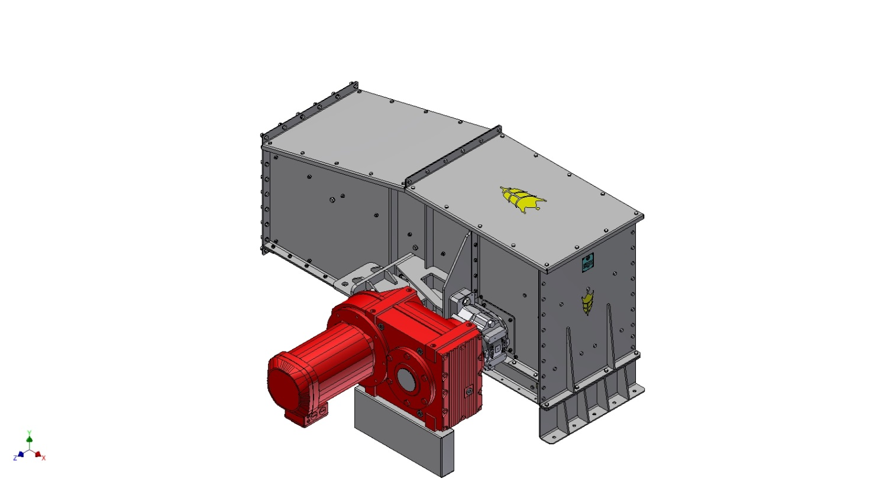
Станция приводная транспортера состоит из:
- Короб;
- Мотор-редуктор (цилиндрический);
- Подшипниковые узлы;
- Вал;
- Звездочка приводная;
- Предохранитель от перегрузки (датчик подпора);
- Датчик контроля обрыва цепи.
Станция приводная с угловым исполнением мотор-редуктора скребковых транспортеров типа ZEO-DC-250...500, мощностью свыше 30 кВт
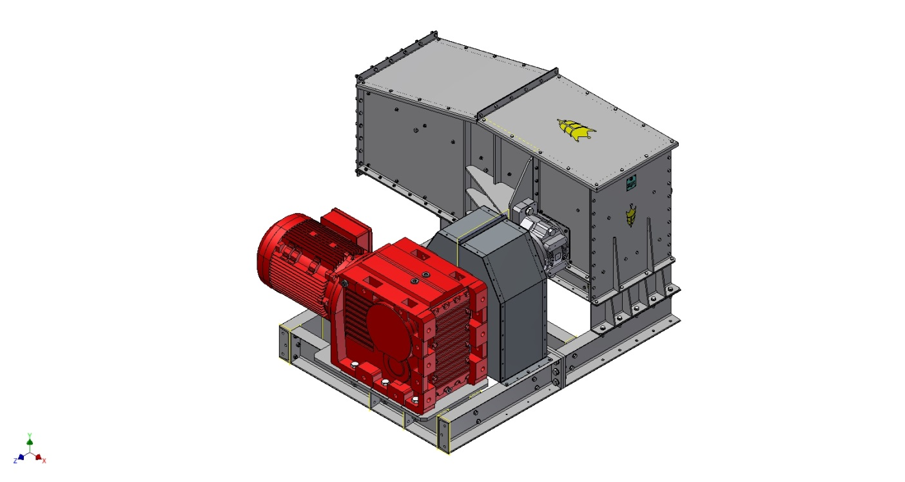
Станция приводная транспортера состоит из:
- Короб;
- Мотор-редуктор (коническо-цилиндрический);
- Муфта упругая втулочно - пальцевая;
- Подшипниковые узлы;
- Вал;
- Звездочка приводная;
- Предохранитель от перегрузки (датчик подпора).
Станция приводная с механизмом натяжения цепи(комбинированная) скребковых транспортеров типа ZEO-DC-250…500
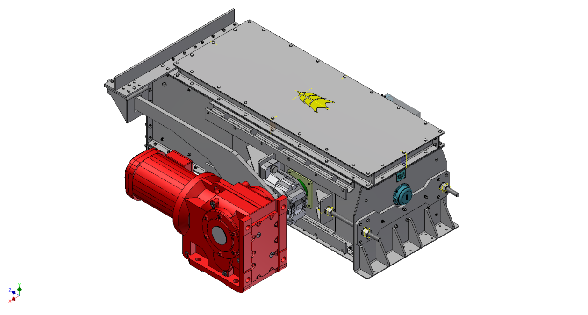
Станция приводная транспортера состоит из:
- Короб;
- Мотор-редуктор (коническо-цилиндрический);
- Подшипниковые узлы;
- Вал;
- Звездочка приводная;
- Предохранитель от перегрузки (Датчик подпора);
- Натяжные винты;
- Натяжные плиты;
- Механизм синхронизации натяжения (Опционно).
Мотор-редуктор
Мотор-редуктор состоит из следующих компонентов: Редуктор (цилиндрический или коническо-цилиндрический); Электродвигатель;
Короб
Прямоугольный короб представляет собой трассу перемещения транспортируемого материала. В коробе движется тяговый орган - цепь. Рабочая ветвь цепи движется по металлическому дну (или по шине скольжения), холостая ветвь цепи - по роликам обратного хода (либо направляющей планке).
Ролики являются самыми массовыми узлами конвейеров. От их работы зависят в большой степени надежность и долговечность конвейера в целом, потребление энергии конвейером, износ тягового органа, эксплуатационные затраты и т.п. В стандартной комплектации ролики транспортёра ZEO-DC изготавливаются из полиамида. Фиксация роликов на валу происходит за счет стопорных колец. Направляющая планка состоит из металлической направляющей и полиамидной футеровки направляющей (стандартная комплектация).
Двухъярусный короб
В транспортерах также применяются двухъярусные короба для транспортировки груза под углом. Для регулировки количества транспортируемого материала используются реечные задвижки с мотор-редуктором или ручным управлением.
Для установки двухъярусного короба необходимо использовать специализированные приводные и натяжные станции, с увеличенной мощностью привода.
Несколько коробов связываются между собой при помощи стыковых фланцевых соединений. В коробе по второму днищу движется транспортирующая цепь. Существует возможность установки футеровки, которая устанавливается на стенки короба, во избежание бокового смещения цепи и уменьшения силы трения цепи о короб конвейера.
Тяговый рабочий орган - цепь.
На скребковых транспортерах ZEO-DC производительностью до 350т/ч (включительно) в качестве тягового рабочего органа применяется, цепь тяговая пластинчатая втулочного типа, разборная со сплошным валиком согласно ГОСТ 588-81. На скребковых транспортерах ZEO-DC производительностью свыше 350 т/ч применяется тяговая цепь вильчатого типа.
Тяговые пластинчатые цепи
Конвейерные цепи втулочного типа состоят из стальных пластин, соединенных валиками. Детали цепей, особенно втулки и пластины, с целью повышения их надежности изготавливают из качественных углеродистых, а иногда и из легированных сталей, цепи подвергаются термообработке (улучшению или нормализации).
В транспортере ZEO-DC используется универсальные пластинчатые длиннозвенные втулочные цепи, смежные звенья которых состоят: первое – из двух внутренних пластин, соединенных между собой втулками, а второе – из двух наружных пластин, плотно посаженных на валик, проходящий внутри втулки.
Такая конструкция цепи обеспечивает малое удельное давление в шарнире и, следовательно, увеличивает долговечность цепи.
Тяговые вильчатые цепи
Отличие цепей вильчатого типа в том, что звено состоит не из пластин, а из детали в виде «вилки», полученной путем горячей объемной штамповки. Звенья устанавливаются одно в другое и фиксируются между собой пальцем со стопорным кольцом.
Для эффективного сопротивления износу в процессе эксплуатации звенья и соединительные пальцы подвергаются термической обработке, вследствие которой приобретают высокую твердость.
Вильчатая форма звена цепи способствует наилучшему осыпанию с цепи транспортируемого груза в местах разгрузки и сводит до минимума возможность натаскивания груза на зубья приводной звездочки. Кроме того, сравнительно с пластинчатыми цепями вильчатые цепи при одинаковом разрывном усилии обладают значительно меньшей массой, что положительно сказывается на сборке, монтаже и эксплуатации цепи в дальнейшем.
Металлические скребки
Скребок конвейера изготавливают из износоустойчивой стали и подвергают термической обработке для повышения сопротивления износу. Металлические скребки транспортеров ZEO-DC футеруются скребки из полиамида (полиамид 6 блочный (капролон В) ТУ 6-05-988-83).
Полиамидные скребки имеют ряд преимуществ перед металлическими:
- уменьшение разрушающего воздействия на продукт, транспортируемый конвейером;
- отсутствие возгорания в транспортере из-за действия сил трения скребков о дно и стенки короба.
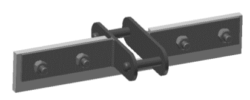 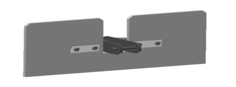 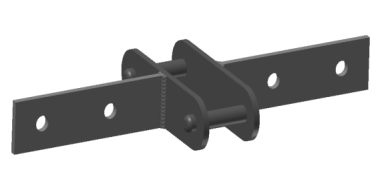
Для зачистки дна транспортера от груза через определенные интервалы устанавливаются скребки-очистители. Возможны различные модификации скребковых-очистителей. При необходимости существует возможность установки по всей длине конвейера.
Датчики контроля и безопасности транспортеров типа ZEO-DC-20…ZEO-DC-350
Датчик обрыва цепи
Датчик расположен на приводной станции транспортера и служит одновременно предохранителем при обрыве цепи и предохранителем от переполнения транспортируемым материалом.
Принцип работы датчика обрыва цепи
При обрыве цепь падает на вилку датчика, под действием нагрузки вилка поднимает рычаг, зафиксированный на подрывной крышке приводной секции при помощи болтового соединения. Крышка фиксируется на приводной секции при помощи пружин.
При выдавливании крышки рычагом (либо транспортируемым грузом в случае перегрузки транспортёра выше заданной производительности, либо завала на выгрузке) срабатывает концевой выключатель, после чего следует остановка работы транспортера. Выдаваемый сигнал может быть обработан в зависимости от пожеланий заказчика (например, отключение всей транспортной установки).
Принцип работы датчиков
Датчик подпора продукта установлен на торцевую стенку станции. Рычаг датчика прижат откидной крышкой, которая притянута к корпусу станции пружинами. В случае переполнения приводной станции продуктом свыше номинального уровня - происходит давление продукта на крышку. При открывании крышки срабатывает концевой выключатель.
Датчик обрыва цепи расположен на стенке станции. Рычаг механизма контроля обрыва цепи прижимает рычажок выключателя под действием пружины. Механизм организован так, что при обрыве цепь падает на вилку датчика, под действием нагрузки вилка поворачивает рычаг. Рычаг освобождает рычажок концевого выключателя.
Конечный выключатель Schneider Electric XCKN2118P20
| Основные характеристики | |
| Серия продукта | OsiSense XC |
| Название серии | Стандартный формат |
| Тип продукта или компонента | Концевой выключатель |
| Краткое название устройства | XCKN |
| Конструкция датчика | Компактная форма А |
| Тип корпуса | Фиксированный |
| Тип головки | Повортная головка |
| Материал | Пластик |
| Материал корпуса | Пластиковый |
| Материал головки | Пластиковый |
| Монтаж | Корпусом |
| Движение рабочей головки | Поворотный |
| Тип рукоятки | Рычаг с роликом с пружинным возвратом термопласт |
| Тип подвода | Подвод сбоку 2 направления |
| Кабельный ввод | 1 ввод с резьбой под кабельный сальник М20 х 1.5, наружный диаметр кабеля: 7...13мм |
| Количество полюсов | 2 |
| Тип контактов | 1 Н.З + 1 Н.О. |
| Работа контактов | Мгновенное действие |
Датчик контроля скорости
Устанавливается на вал в натяжной станции и служит для контроля числа оборотов натяжного ролика транспортера. Бесконтактный датчик установлен на определенном расстоянии от флажка, закрепленного при помощи болтового соединения на валу. Принцип действия датчика заключается в контроле вращения флажка.
Датчик контроля скорости Schneider Electric XSAV12373
| Основные характеристики | |
| Серия продукта | OsiSense XS |
| Название серии | Приложение |
| Тип датчика | Бесконтактный индуктивный датчик |
| Применение устройства | Контроль вращения |
| Наименование датчика | XSA |
| Конструкция датчика | Цилиндрический М30 |
| Размер | 81 mm |
| Тип корпуса | Фиксированый |
| Возможность скрытого монтажа датчика | Для скрытого монтажа |
| Материал | Металл |
| Материал шкафа | Никилерованная латунь |
| Тип выходного сигнала | Дискретный |
| Способ электромонтажа | 3-проводн. |
| [Sn] номинальная дальность обнаружения | 10 мм |
| Функция дискретного выхода | 1 Н.З. |
| Тип выходной цепи | Пост. ток |
| Тип дискретного выхода | PNP |
| Электрическиое соеденение | Кабель |
| Длина кабеля | 2 м |
| Номинальное напряжение питания [Us] | 12...48 В пост. ток с защита от включения с обратной полярностью |
| Коммутационная способность, мА | <= 200 мА с защитой от перегрузки и короткого замыкания |
| Степень защиты IP | IP67 в соответствии с IEC60529 |
Датчик контроля скорости Schneider Electric XS630B1PBL2
| Основные характеристики | |
| Серия продукта | OsiSense XS |
| Название серии | Приложение |
| Тип датчика | Бесконтактный индуктивный датчик |
| Применение устройства | Контроль вращения |
| Наименование датчика | XS6 |
| Конструкция датчика | Цилиндрический М30 |
| Размер | 62 mm |
| Тип корпуса | Фиксированый |
| Возможность скрытого монтажа датчика | Для скрытого монтажа |
| Материал | Металл |
| Тип выходного сигнала | Дискретный |
| Способ электромонтажа | 3-проводн. |
| [Sn] номинальная дальность обнаружения | 15 мм |
| Функция дискретного выхода | 1 Н.З. |
| Тип выходной цепи | Пост. ток |
| Тип дискретного выхода | PNP |
| Электрическиое соеденение | Кабель |
| Длина кабеля | 2 м |
| Номинальное напряжение питания [Us] | 12...48 В пост. ток с защита от включения с обратной полярностью |
| Коммутационная способность, мА | <= 200 мА с защитой от перегрузки и короткого замыкания |
| Степень защиты IP | Двойная изоляция IP68 в соответствии с IEC 60529 IP69K в соответствии с DIN 40050 |
Индуктивный датчик общепромышленного применения, предназначенный для контроля положения объектов из металла (к другим материалам не чувствителен).
Механизм синхронизации
Данный механизм служит для синхронизации натяжения цепи, полностью исключает нарушение перпендикулярности оси натяжного вала с осью конвейера.
Механизм синхронизации обеспечивает одновременное приведение в движение валов c последующим перемещением натяжной плиты для натяжения цепи.
Задвижка для регулирования выгрузки зерна
Реечная задвижка с электроприводом предназначена для регулирования выгрузки зерна и продуктов его переработки из скребкового транспортера. Задвижка имеет электропривод и конечные выключатели для дистанционного управления.
Задвижка реечная представляет собой сборной прямоугольный корпус, внутри которого по направляющим перемещается шибер. В нижней части шибера закреплена зубчатая рейка, которая сопрягается с шестерней, насаженной на приводной вал, соединенный с мотор - редуктором.
Для ограничения хода шибера в задвижке установлены два концевых выключателя, при помощи которых можно контролировать величину перекрытия шибером рабочего окна.
Благодаря применению подшипников, в качестве направляющих, обеспечивается плавное перемещение шибера, уменьшается сопротивление и, как следствие, меньшее потребление электроэнергии по сравнению с аналогами, а также повышается ресурс эксплуатации задвижек.
Задвижки могут быть изготовлены с ручным приводом. В таком случае ограничителем движения шибера будет являться сам корпус задвижки.
Продольная задвижка
Продольная задвижка для регулирования выгрузки зерна устанавливается на секции транспортера длиной 2м. Открытие шибера происходит вдоль конвейера в сторону транспортирования груза.
Поперечная задвижка
Поперечная задвижка для регулирования выгрузки зерна устанавливается на секции транспортера длиной 1м и более. Открытие шибера происходит поперек конвейера.
На заводе-изготовителе постоянно ведётся работа по модернизации оборудования, в следствие чего в конструкцию транспортёров ZEO-DC могут быть внесены изменения, которые не отражены в данном руководстве по эксплуатации.
ВВОД В ЭКСПЛУАТАЦИЮ
Общие положения
Перед вводом в эксплуатацию ZEO-DC необходимо проработать следующий контрольный список:
Предмет контроля:
- Отсутствие транспортировочных креплений;
- Отсутствие мусора после монтажа (например, винты, гайки, остатки сварочных электродов или инструмент);
- Герметичность соединений всех секций;
- Безупречность работы всех механических агрегатов;
- Правильность направления и транспортировки;
- Провести пробный пуск конвейера без груза;
Первый ввод в эксплуатацию
Обязательно при вводе в эксплуатацию воспользоваться таблицей, приведенной ниже, для дальнейшей бесперебойной работы транспортера.
| Предмет контроля | в норме |
| Залито ли в редуктор необходимое количество масла? | |
| Правильность направления вращения двигателя (правильное подключение)? | |
| Надлежащее функционирование распределительного устройства? | |
| Надлежащее функционирование устройств подачи и отвода продукта? Проследить, чтобы к ZEO-DC была подключена система питания. При этом нужно обеспечить, чтобы подключенные системы работали в такт с ZEO-DC,это означает, что сыпучий материал непрерывно подается и отводится без образования заторов. Ввод в эксплуатацию ZEO-DC необходимо согласовать с обслуживающим персоналом этих соседних установок. Частичная загрузка ZEO-DC продуктом производится только после завершения контроля и выполнения пробного пуска. | |
| Обеспечивается ли непрерывность потока загрузки и разгрузки сыпучих материалов? | |
| Скорость движения цепи правильная? | |
| Бесшумность работы двигателя и редуктора? | |
| Остаются ли рабочие температуры редуктора и двигателя на низком уровне? |
Дальнейший ввод в эксплуатацию
Знание содержания настоящего руководства по эксплуатации является необходимым условием квалификации персонала, допущенного к эксплуатации ZEO-DC. После того как настоящее руководство по эксплуатации прочитано, а его содержание полностью усвоено, можно приступать к вводу ZEO-DC в эксплуатацию.
Эксплуатация
ZEO-DC рассчитан на длительную работу в автоматическом режиме. Поэтому контроль в процессе работы ограничивается только следующими пунктами:
- Контроль производительности транспортировки;
- Контроль аспирации;
- Контроль износа.
Техническое обслуживание / контроль.
Наряду с приведенными ниже указаниями по техническому обслуживанию необходимо соблюдать специальные инструкции изготовителей по техническому обслуживанию и контролю. Инструкции находятся в приложении.
| Интервал | Мероприятия |
|
Каждые 20 часов или ежедневно (При комплектации системой smart individual проводить осмотр не требуется) |
Проверить отклонение температуры от номинальной в местах установки подшипников. |
| Проверить транспортёр полностью на наличие необычных шумов. | |
| Контроль работоспособности устройств безопасности, функциональные испытания. | |
| Очистить смотровые окна (Если имеются). | |
| Каждые 200 часов или еженедельно | Проверить цепи и её натяжения. |
| Удалить пыль с поверхности мотор-редуктора. | |
| Проверка болтового крепления мотор-редуктора с реактивной тягой/проверка болтового крепления мотор-редуктора с рамой. | |
| Визуальный контроль муфты сцепления (Если имеется). Контроль зазора между полумуфтами. | |
| Визуальный контроль электрических подключений. | |
| Контроль износа роликов поддержки цепи/направляющих планок (при износе 10мм - заменить) в местах загрузки продукта в конвейер. | |
| Каждые 1000 часов или 2 месяца | Контроль износа роликов поддержки цепи/направляющих (при износе 10мм - заменить) планок по всему конвейеру. |
| Контроль износа полиамидных скребков цепи. | |
| Металлическое днище, контроль износа. | |
| Каждые 3000 часов или каждые 6 месяцев | Контроль работы подшипниковых узлов. Полная смена смазочного материала. |
| Проверка всех болтовых соединений на уровень затяжки. | |
| Замена масла в мотор-редукторе - согласно технической документации на мотор-редукторе. | |
Общие правила содержания и технического обслуживания
Хорошая программа содержания и технического обслуживания включает тщательный общий уход, отвечающую требованиям периодическую смазку и своевременную регулировку натяжных приспособлений для поддержания требуемого натяжения цепи.
Ремонт
При необходимости обращайтесь, пожалуйста, по адресу:
Украина, 65096, г. Одесса
Балтская дорога 76/78
т/ф,: +38(048) 786-83-00
E-Mail: info@zeo.ua
Периодический осмотр
Наблюдайте за работой конвейера через регулярно установленные промежутки времени и соблюдая все правила техники безопасности. Следите за следующим:
- Проверьте провисание цепи и убедитесь, что оно не превышает допускаемую норму провисания.
- Незакрепленные или недостающие элементы.
- Посторонние шумы в подшипниках, двигателе или редукционной зубчатой передаче.
- Перегрев подшипников, двигателя или редукционной зубчатой передачи.
- Повреждение конструкции.
- Ржавчина или коррозия.
- Поврежденная проводка, включая оголенные провода и ниппели.
- Периодически отключайте и размыкайте подачу энергии на конвейер.
- Проверяйте цепь на предмет повреждений в результате инородных тел, попавших в конвейер.
Информация о смазочных материалах
Наполнение редукционной зубчатой передачи смазочным материалом
Редуктор конвейерного привода транспортируется, поставляется заполненным синтетическим трансмиссионным маслом. Руководствуясь документацией,прилагаемой к выбранной редукционной зубчатой передаче, контролируйте уровень масла в картере редуктора. Перечень применяемых масел вы можете найти в руководстве по эксплуатации на редуктор.
Необходимо до первого пуска проконтролировать крепление всех подшипниковых узлов. Подшипниковые узлы в приводной, натяжной и промежуточных секциях наполняются смазкой на заводе-изготовителе и требуют повторной смазки перед началом эксплуатации.
| Наименование узла | Наименование смазочных материалов | Кол-во точек смазки | Способ нанесения смазочных материалов | Периодич-ность проверки смены смазки | ||
| При t до -20 0 | При t до -30 0 | Для длительного хранения | ||||
| Подшипник приводной звёздочки и натяжного ролика | Avialith 2EP | Солидол жировойГОСТ 1033-79 | Масло консервационное К17 ГОСТ 10877-76 | 4 | Шприцевой | 1 раз в месяц |
| Подшипниковые узлы роликов поддержки цепи в натяжной и приводной станциях | - | - | ||||
| Подшипниковые узлы задвижек промежуточных и конечных выгрузок | - | Все узлы | ||||
| Мотор-редуктор | Своевременная замена масла в редукторе производится согласно паспорта на мотор-редуктор. | |||||
Общие правила ухода за транспортером
Чтобы избежать перегревания, снимайте накопившуюся грязь с привода через частые и регулярные промежутки времени. Д ля эффективного охлаждения двигателей с вентиляторным охлаждением обеспечивать беспрепятственный поток воздуха над кожухом.
Картеры зубчатой передачи также должны быть освобождены от грязи для эффективного излучения тепла. Большинство редукционных зубчатых передач имеет отдушину, позволяющую выпуск газов, которые могут накапливаться внутри. Если грязь закупоривает отдушину, внутреннее давление может разорвать затворы. Вытекающая смазочная жидкость может загрязнить изделие, вызвать перебой в действии редукционной зубчатой передачи и простой оборудования.
Содержите место вокруг выключателя при разрыве/соскальзывании цепи свободным от накоплений грязи и мусора, которые могут нарушить нормальные функции выключателя.
Во время эксплуатации транспортера, цепи и скребки должны подвергаться систематическому осмотру, во избежание нарушения работы транспортера.
Выявление неисправностей
Если неисправность возникла при запуске, убедитесь, что конвейер был установлен и эксплуатируется согласно характеристикам, сформулированным при заказе конвейера, констатированным в подтверждении расценки и указанным на официальном чертеже, который прилагается к конвейеру. Среди факторов, которые надо учитывать, имеются следующие:
- Используется ли конвейер по назначению, как указано на официальных чертежах, например, для работы под уклоном?
- Если конвейер предназначен для работы под уклоном, превышает ли величина уклона величину, указанную на официальном чертеже?
- Используется ли привод другой мощности или производительности, чем указано в расценке?
- Превышает ли пропускная способность конвейера, объем или вес транспортируемых материалов?
- Используется ли конвейер для транспортировки других материалов, чем те, для которых он изначально был предназначен?
- Проверьте, нет ли препятствий на впуске в конвейер или в резервуар для материалов.
| Неполадки | Причина | Устранение |
| Перегрев мотор-редуктора | Перегрузка | Проверить движение цепи и транспортируемого груза |
| Проверить систему | ||
| Не сработал датчик подпора | Датчик подпора заменить или вновь отрегулировать | |
| Датчик тепловой защиты двигателя не сработал | Датчик тепловой защиты двигателя заменить или вновь отрегулировать | |
| Прочие причины | Смотрите информацию производителя | |
| Повышенная температура подшипника | Отсутствие смазки | Проверить смазку, при необходимости добавить |
| Неправильный монтаж | Проверить монтаж подшипника | |
| Поврежден подшипник | Заменить подшипник | |
| Посторонние шумы | Посторонние предметы в конвейере | Выключить конвейер, удалить посторонние предметы |
| Корпус подшипника сидит не плотно | Проверить затяжку крепежных болтов, подшипникового узла при выходе из строя, заменить новым. | |
| Касание цепи о боковые стенки | Натянуть цепь | |
| Проверить правильность соединения секций конвейера между собой. Выступающие грани не допускаются. Выровнять короб. | ||
| Повреждён подшипник | Заменить подшипник | |
| Деформация скребков | Отрихтовать скребок либо приварить новый. При необходимости заменить звено со скребками в сборе. | |
| Самостоятельное отключение конвейера | Нарушено прохождение груза, перегрузка | Восстановить процесс после полной очистки короба от продукта. |
| Датчик подпора неправильно отрегулирован | Отрегулировать датчик подпора | |
| Сработал датчик скорости вращения | Проверить движение цепи, натянуть цепь | |
| При разрыве цепи заменить звено. | ||
| Материал не транспортируется | Застопорен загрузочная горловина | Проверить заслонку |
| Отсутствует подача груза. | Проверить предыдущую транспортную систему | |
| Обрыв цепи | Соединить звено цепи или всю цепь | |
| Проскальзывание цепи | Натянуть цепь, проконтролировать износ зубьев на приводной звёздочке. | |
| Повышенный износ дна | Вмятина в середине | Отодвинуть дно, удалить груз и при сборке прикрепить другое дно, используя имеющиеся отверстия. |
| Цепь изогнута | Цепь выровнять или заменить | |
| Цепь не зачищена | Зачистить цепь | |
| Наличие металлических частиц в грузе | Установить соответствующий очиститель на приёме |